14 rounds · 70 generated · 51 kept · 19 dropped · 73% keep rate
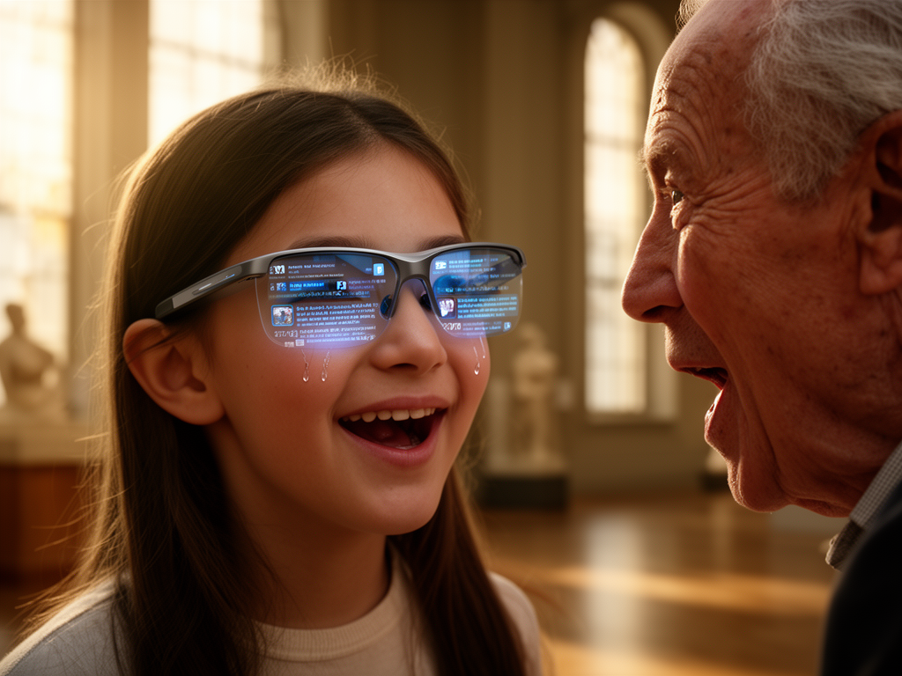
photorealisticPhotorealistic, cinematic lighting, close-up of a young deaf girl wearing sleek smart glasses, face lit with sudden joy as AI captions appear in her vision, elderly grandfather speaking beside her, warm afternoon museum light through tall windows, shallow depth of field, tears at the corner of her eye, emotional connection across silence NO TEXT NO LABELS
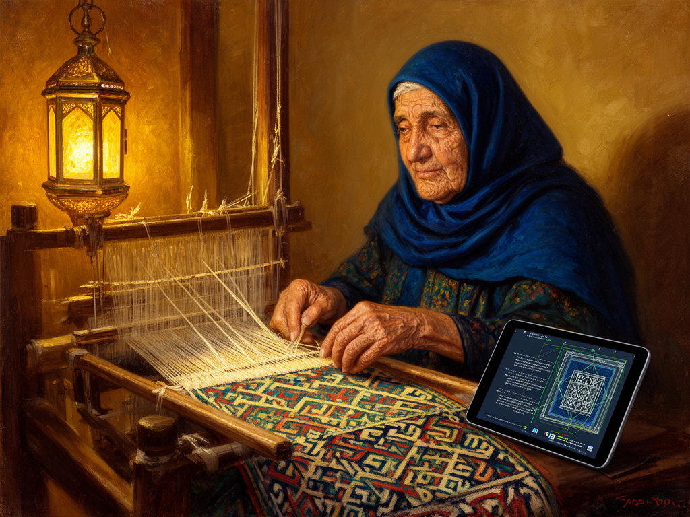
oil_paintingOil painting, visible brushstrokes, classical lighting, elderly Moroccan woman weaving intricate geometric patterns at a wooden loom, small tablet beside her shows AI mapping her technique for preservation, golden lantern warmth, rich ochres and indigo, dignified portrait composition, her weathered hands mid-motion, thread catching light, centuries of knowledge in her posture NO TEXT NO LABELS
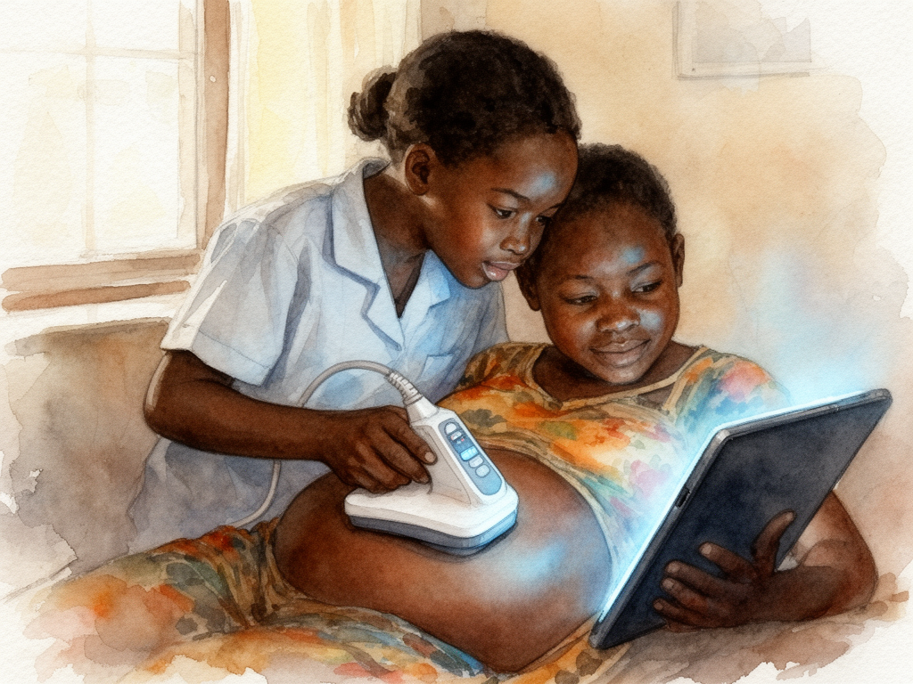
watercolorWatercolor wash, loose flowing strokes, paper texture visible, young midwife in rural Uganda pressing portable AI ultrasound probe to a pregnant woman's belly, both women leaning toward a glowing tablet screen together, soft light through a clinic window, tender shared anticipation, earth tones and warm ochre skin, the faintest blue glow from the screen NO TEXT NO LABELS
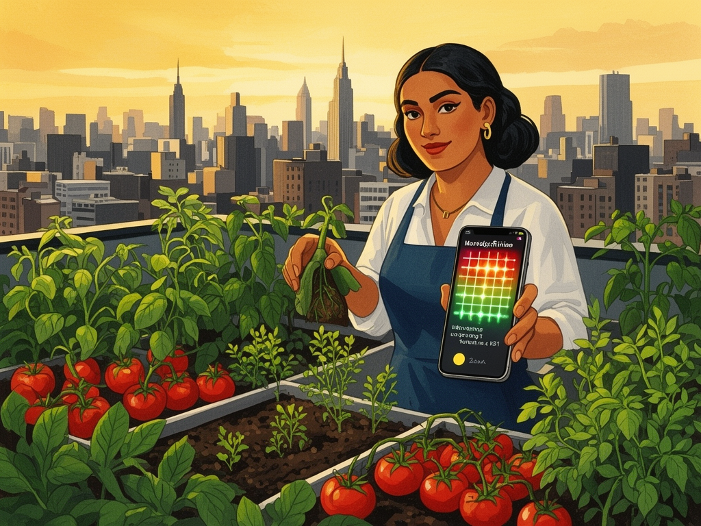
gouacheGouache illustration, flat bold colors, mid-century modern, Latina woman tending lush rooftop garden above a dense city skyline, phone in one hand showing a bright sensor grid of soil moisture and harvest timing, late afternoon gold light, graphic beds of tomatoes and herbs, city geometry below her, expression of confident ownership — this is her domain NO TEXT NO LABELS
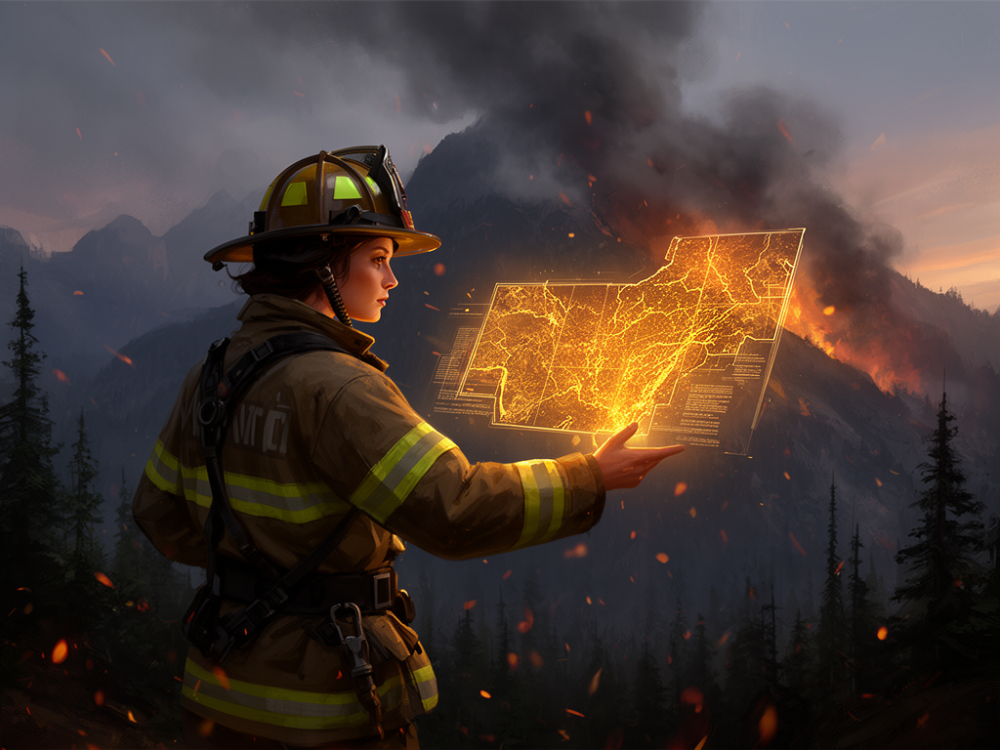
concept_artDigital concept art, painterly, matte painting style, lone female firefighter at the treeline edge at dusk, forearm projecting a holographic AI fire-spread map glowing amber against smoke-filled mountains, she studies it with calm authority, embers drift past her helmet, epic environmental scale dwarfs her body but her stillness commands the frame, heroic and grounded NO TEXT NO LABELS
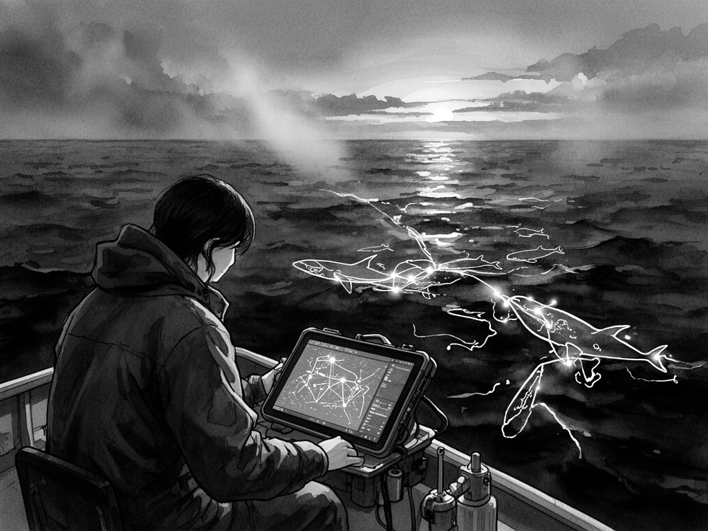
ink_washBlack and white ink wash, sumi-e inspired, dramatic contrast, solitary marine biologist on small research vessel at dawn, hunched over waterproof tablet displaying glowing sensor network map of ocean floor, whale migration routes traced in light, vast dark sea around her, mist on horizon, wave reflections shattered in ink. NO TEXT NO LABELS
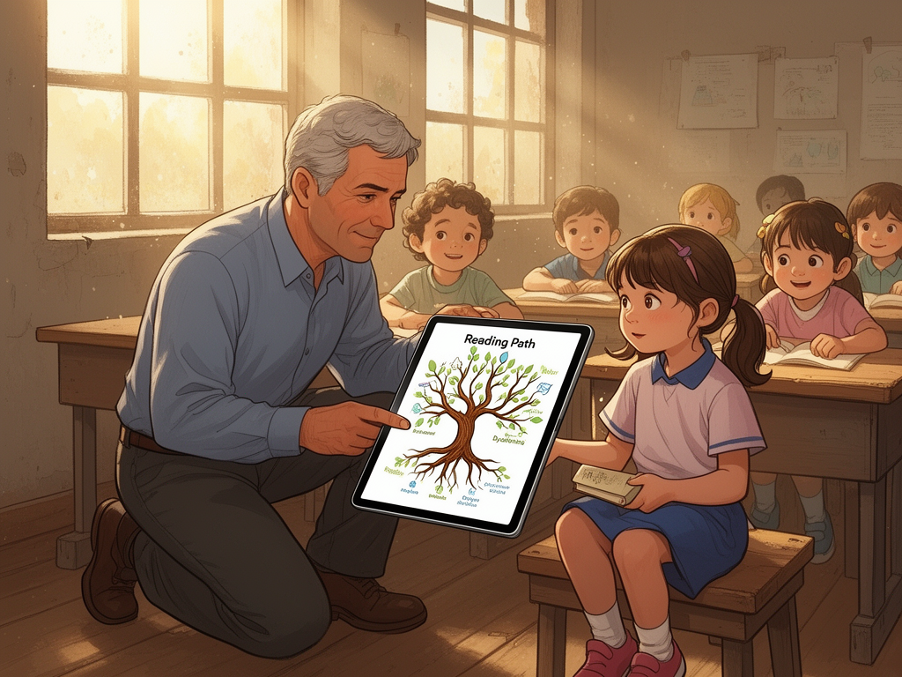
editorialEditorial illustration, clean lines, warm palette, magazine quality, middle-aged male teacher kneeling beside a girl with dyslexia in sunlit rural classroom, AI tablet between them showing her personalized reading path branching like a tree, sunlight through dusty windows, other children engaged at desks behind them, focused tenderness in his posture. NO TEXT NO LABELS
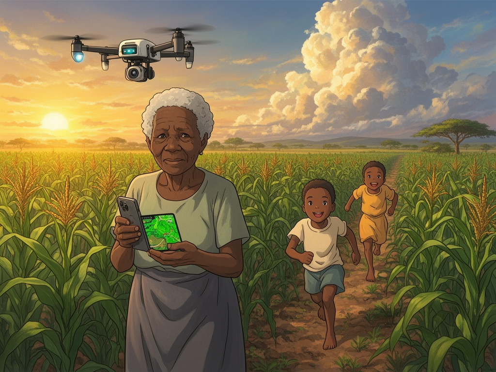
ghibliStudio Ghibli inspired, lush detail, simple figures, nature harmony, elderly Kenyan grandmother walks rows of thriving maize at golden hour, small autonomous drone drifts above scanning crop health, weathered phone in her hand shows green soil health map, grandchildren chasing each other between stalks behind her, clouds enormous and alive, land radiant with color. NO TEXT NO LABELS
Retro-future poster, bold geometric shapes, limited palette, female civil engineer in hardhat stands before half-built bridge, tablet held up showing structural stress simulation as bold overlaid geometric lines, orange sky, teal shadows, tiny workers on scaffolding below, bridge arc rising strong and clean, diagonal composition full of forward momentum. NO TEXT NO LABELS
Architectural rendering, precise lines, ambient occlusion, physical therapist beside elderly stroke patient taking careful steps in rehabilitation room, AI motion sensors mounted on ceiling casting faint tracking halos around the patient's movement, progress arc on wall screen, afternoon light flooding through floor-to-ceiling windows, stillness and effort and hope in equal measure. NO TEXT NO LABELS
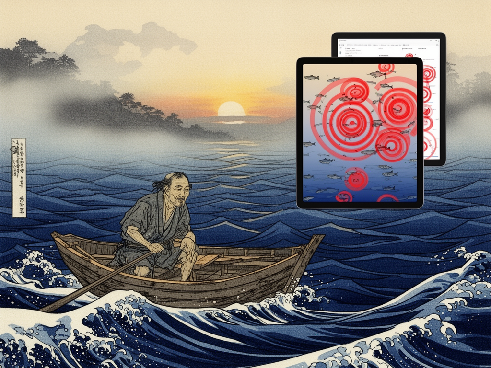
woodblockJapanese woodblock print, flat planes, bold outlines, weathered Japanese fisherman on small wooden boat at dawn, indigo sea as stacked flat wave planes, tablet screen showing fish migration routes as bold red circles that echo the woodblock wave patterns, humble composure, Hokusai palette, morning mist, data and tradition speaking the same visual language NO TEXT NO LABELS
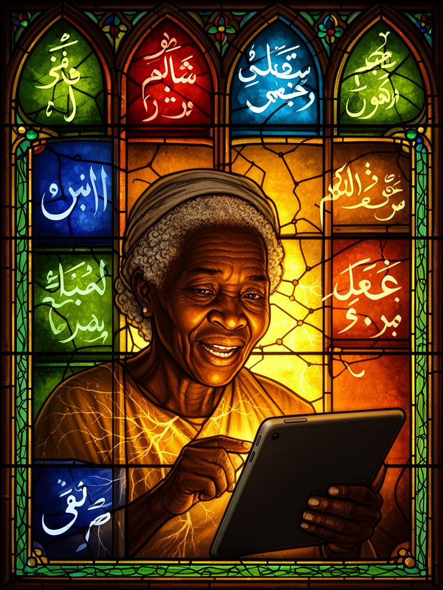
stained_glassStained glass style, luminous colors, lead lines, Gothic frame, elderly West African grandmother speaking to a tablet in a community center, surrounding panels transforming her words into Arabic, Haitian Creole, Vietnamese script preserved as luminous colored glass, warm amber light through her face, lead lines forming subtle neural network pattern, reverence for what would be lost NO TEXT NO LABELS
Isometric view, detailed miniature, tilt-shift depth of field, middle-aged Black woman in community food pantry, tiny isometric shelves and distribution routes visible below her, color-coded translucent overlays showing AI inventory optimization, warm afternoon light, figures receiving boxes softly blurred in background, her calm focus sharp in the center frame, tilt-shift making the community feel precious and worth protecting NO TEXT NO LABELS
Charcoal drawing, dramatic shadows, textured paper, Filipina ICU nurse at 3am leaning toward a patient monitor, face lit by screen glow, AI cardiac alert as a single bright anomalous line amid dark waveforms, her hand poised above the call button, entire room in deep shadow except her focused face and the monitor, life-or-death composure, tender authority, rough charcoal texture grounding the stakes in something real NO TEXT NO LABELS
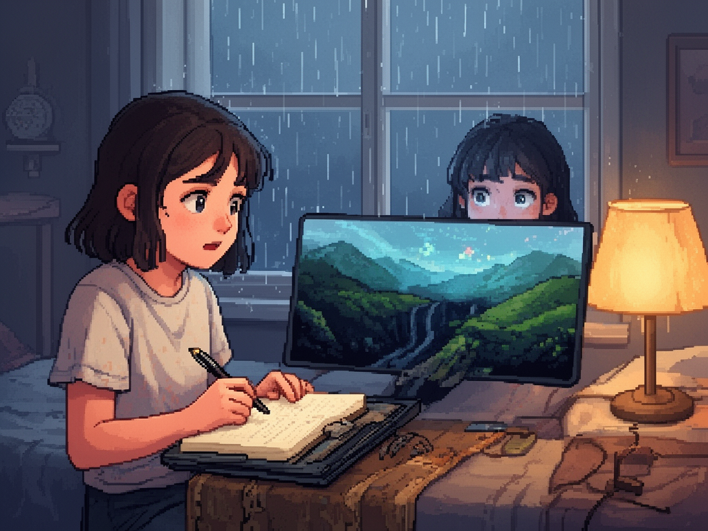
pixel_artDetailed pixel art, 16-bit palette, dithering, teenage girl journaling on a worn tablet, AI mood history rendered as a pixel art landscape visible on screen — dark valleys gradually becoming navigable hills, her face reflected in the screen shows cautious wonder, bedroom window behind her shows real rain, warm lamplight dithered against blue-gray digital world, mental health data reframed as terrain worth exploring not a verdict to receive NO TEXT NO LABELS
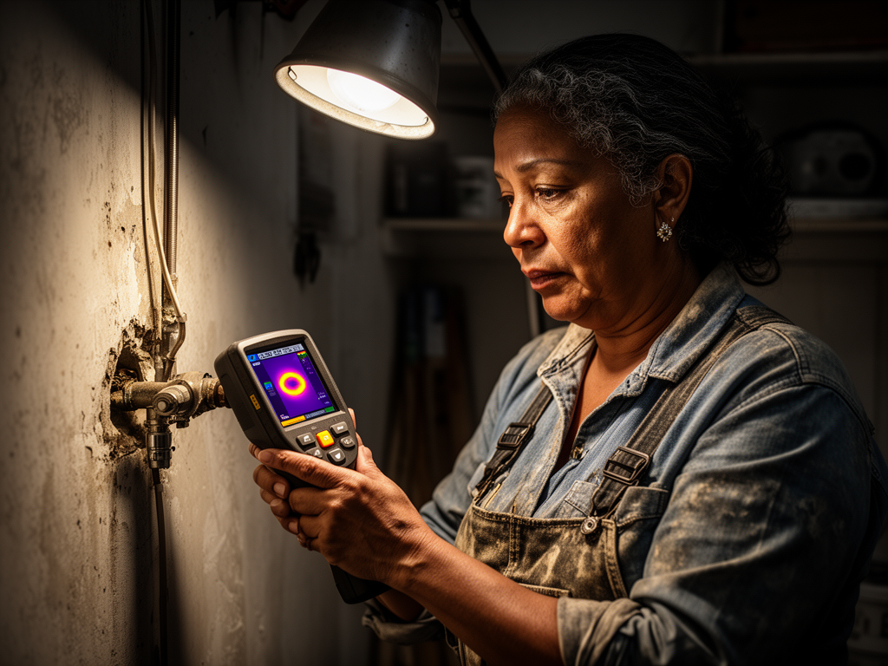
photorealisticPhotorealistic, cinematic lighting, a middle-aged Puerto Rican woman plumber in worn work clothes examines a wall junction, handheld thermal scanner in her grip showing heat anomaly on its small display, utility room shadows broken by a single work lamp angled across her face, she is absorbed and expert, the technology fits in her palm like a second tool, her confidence needs no explanation, NO TEXT NO LABELS
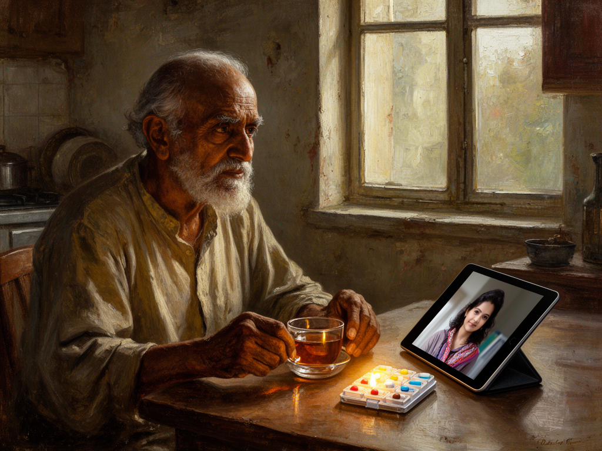
oil_paintingOil painting, visible brushstrokes, classical lighting, elderly South Asian man at his kitchen table in morning window light, a small lit pill organizer beside his tea, a tablet face-up shows a photo from his daughter, his posture is unhurried and at home, Rembrandt-quality light catches his hands and the rim of his cup, the room is worn and familiar, the technology is present without announcing itself, NO TEXT NO LABELS
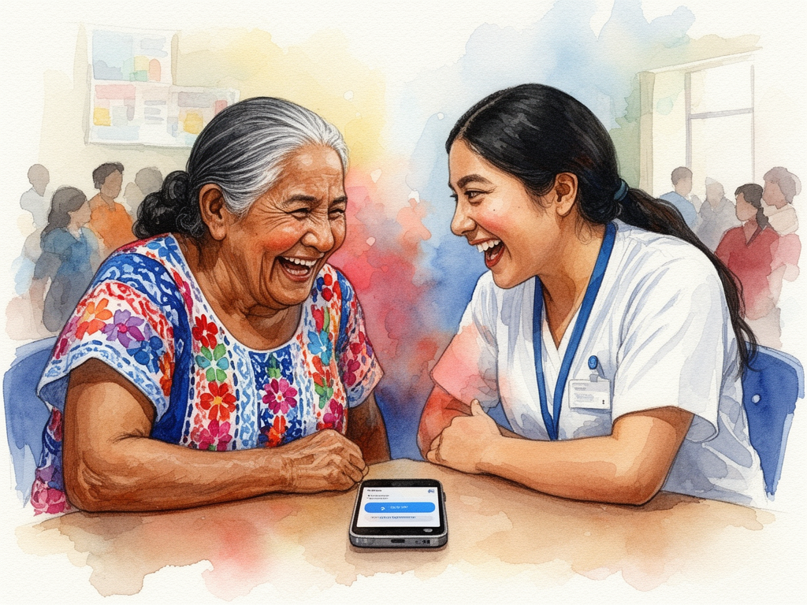
watercolorWatercolor wash, loose flowing strokes, paper texture visible, a Guatemalan grandmother and a young social worker sit close at a community center table, a phone between them translating in real time, both lean forward laughing at something just understood, the pigment of their faces and clothes bleeds softly where they are near each other, the gap between them is visibly closing, the warmth lives in the bleed, NO TEXT NO LABELS
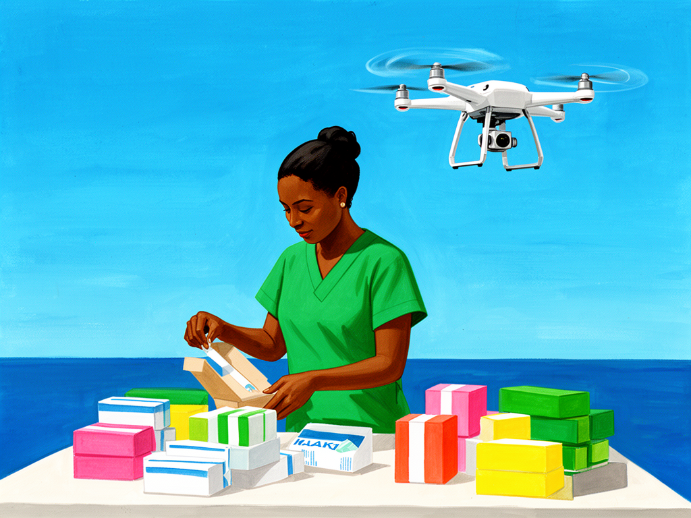
gouacheGouache illustration, flat bold colors, mid-century modern, Pacific island community health worker in vivid green scrubs stands at an outdoor table sorting drone-delivered medical supplies, a white drone banks away into cerulean sky behind her, the supplies are arranged in bright color-blocked stacks, she is mid-count and focused, the sea is flat blue at the frame edge, NO TEXT NO LABELS
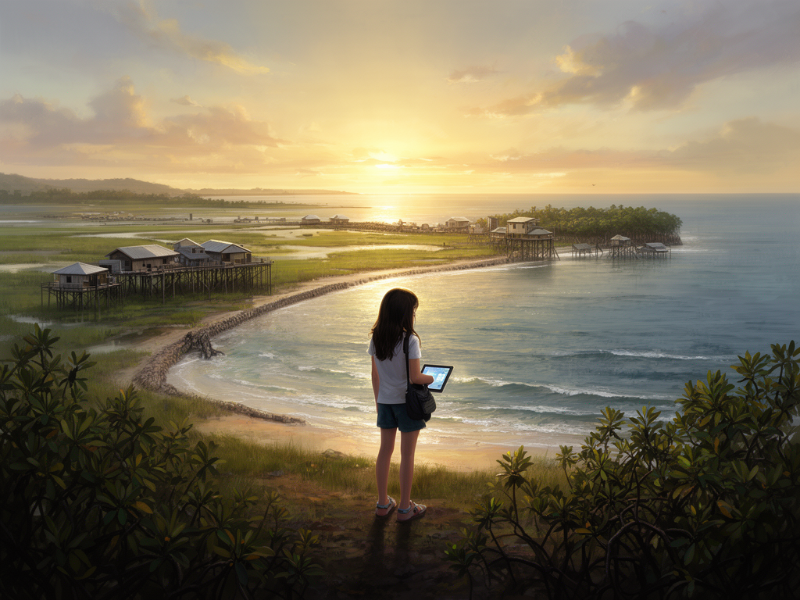
concept_artDigital concept art, painterly, matte painting style, a teenage girl stands on a restored mangrove shoreline at golden hour, tablet held loosely at her side, behind her the transformed coastline curves away — natural breakwaters, elevated community structures anchored in restored wetland, the sea held at its proper distance, she is small against the landscape but at its center, the horizon glows like something was repaired here, NO TEXT NO LABELS
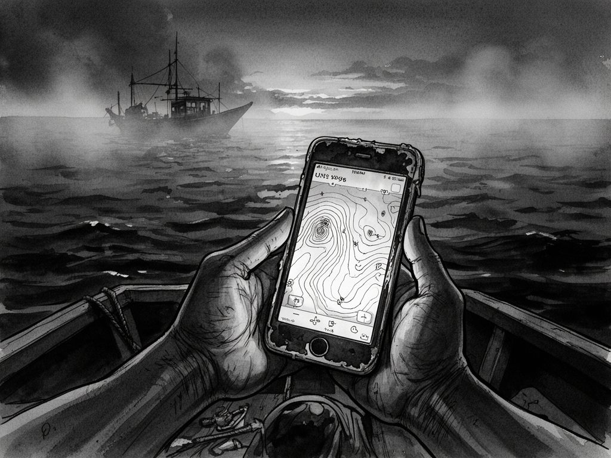
ink_washBlack and white ink wash, sumi-e inspired, dramatic contrast, pre-dawn fishing boat, weathered Filipino fisherman hands cradling a battered phone showing depth contours, sea a vast ink field around him, phone glow the only warmth, mist dissolving the horizon, solitude that is complete not lonely, NO TEXT NO LABELS
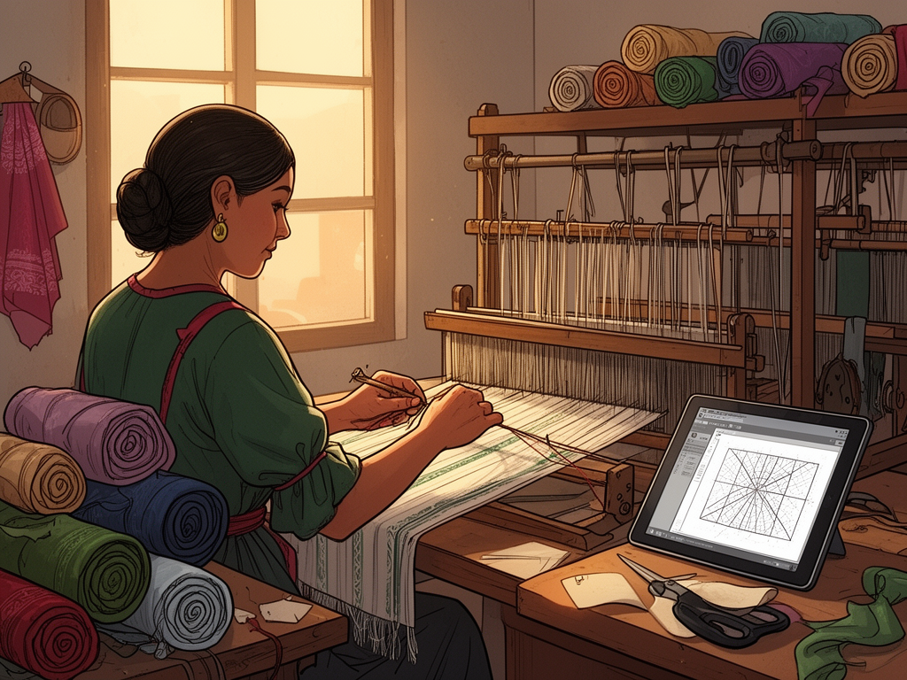
editorialEditorial illustration, clean lines, warm palette, magazine quality, Mexican seamstress in small atelier surrounded by bolts of fabric, tablet beside her loom showing pattern optimization, her hands guiding thread, late afternoon window light, craft and computation sharing the same worktable as equals, NO TEXT NO LABELS
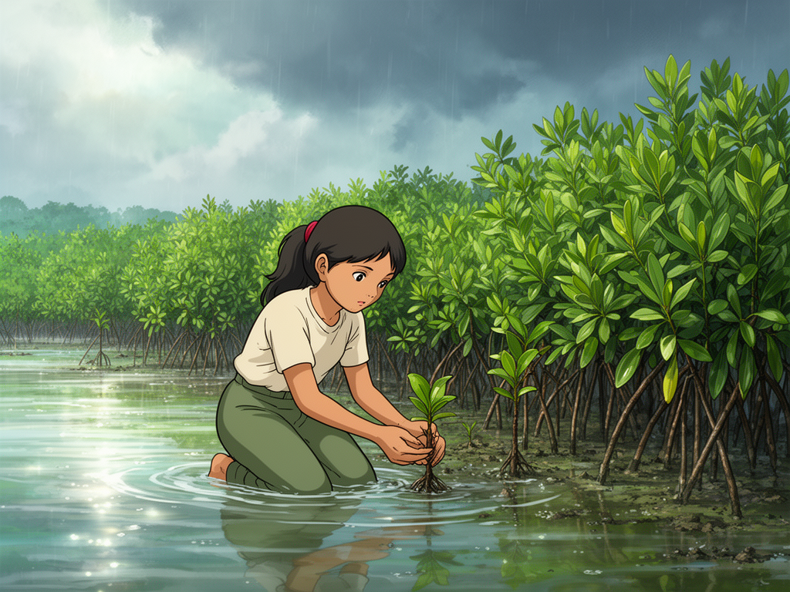
ghibliStudio Ghibli inspired, lush detail, simple figures, nature harmony, young Bangladeshi woman knee-deep in coastal wetland planting mangrove seedlings by hand, the section she restored last year already lush and teeming behind her, sky clearing after rain, water catching light, the AI's work already done and gone, NO TEXT NO LABELS
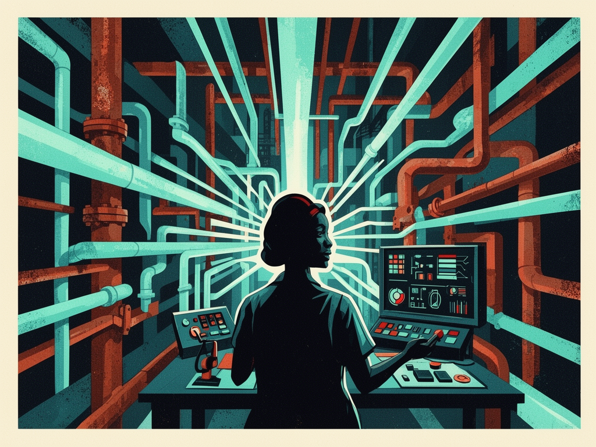
retro_posterRetro-future poster, bold geometric shapes, limited palette, Kenyan water utility operator at her control station, silhouette central, pipe network radiating outward in aqua and rust geometry, AI flow optimization rendered as the poster's own graphic logic, she is the city's center of gravity, NO TEXT NO LABELS
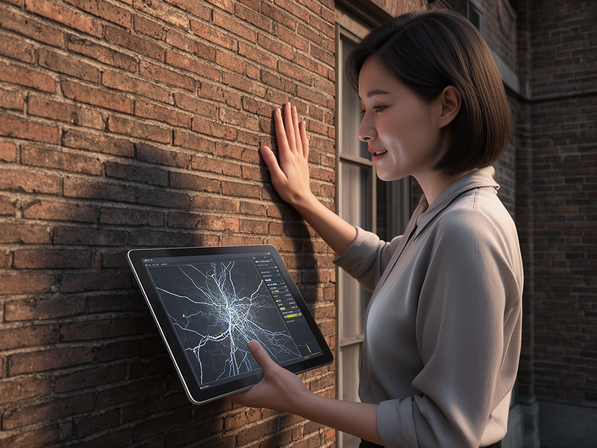
architecturalArchitectural rendering, precise lines, ambient occlusion, Korean structural engineer in 1920s brick building, palm pressed to the wall, tablet showing sensor map of hidden stress fractures as clean geometry, decades of silent strain now legible, her expression relief and recognition, precision as a form of empathy, NO TEXT NO LABELS
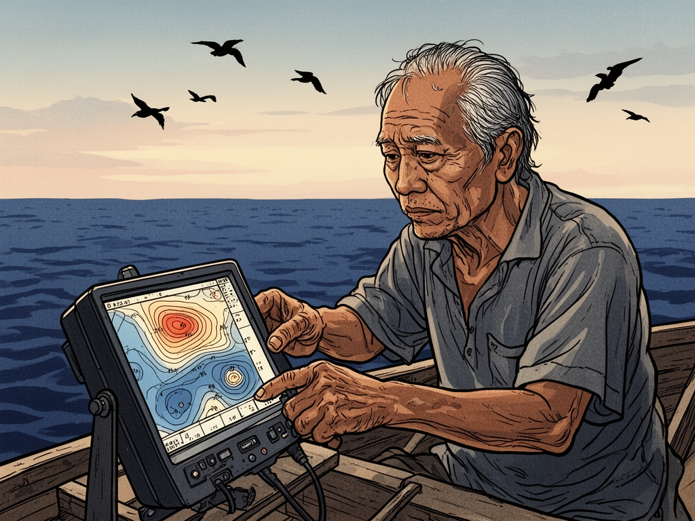
woodblockJapanese woodblock print, flat planes, bold outlines, dawn over open ocean, elderly Filipino fisherman in wooden banca adjusting course by hand, weathered fingers on waterproof unit showing school positions as bold depth contours, flat indigo water plane below pale sky plane, birds as black brushmarks, no heroic gesture just a man recalculating, quiet dignity NO TEXT NO LABELS
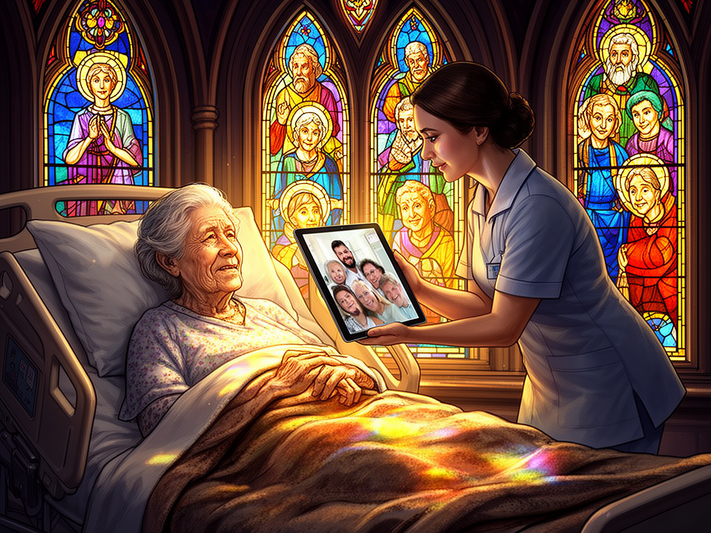
stained_glassStained glass style, luminous colors, lead lines, Gothic frame, elderly woman in hospice bed, nurse gently angling tablet so patient sees family faces on screen, light fractured into warmth across worn blanket, faces in luminous color panels like windows, technology as pure conduit between worlds, no device branding, the glow is all that exists NO TEXT NO LABELS
Isometric view, detailed miniature, tilt-shift depth of field, cold storage warehouse, Latina worker in padded jacket scanning produce pallets with handheld device, sharp focus on her hands, soft blur at edges, ripe tomatoes near expiry glowing warm against steel gray, worn floor paths showing years of routes, each crate rendered precious, labor dignified by scale NO TEXT NO LABELS
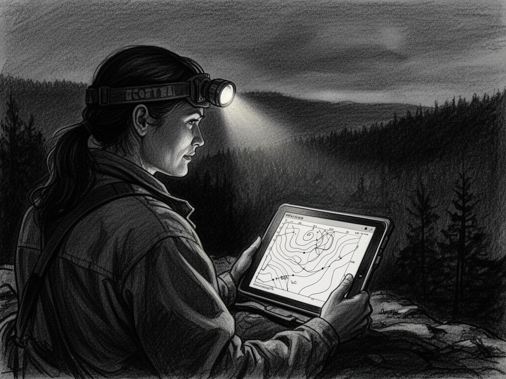
charcoalCharcoal drawing, dramatic shadows, textured paper, wildfire crew boss alone on ridge at 3am, single headlamp illuminating face and open tablet, wind-shift forecast as sparse hand-drawn contour lines on screen, forest darkness absolute around her, no equipment glamour, weight of the decision in her jaw and shoulders, ash-gray sky NO TEXT NO LABELS
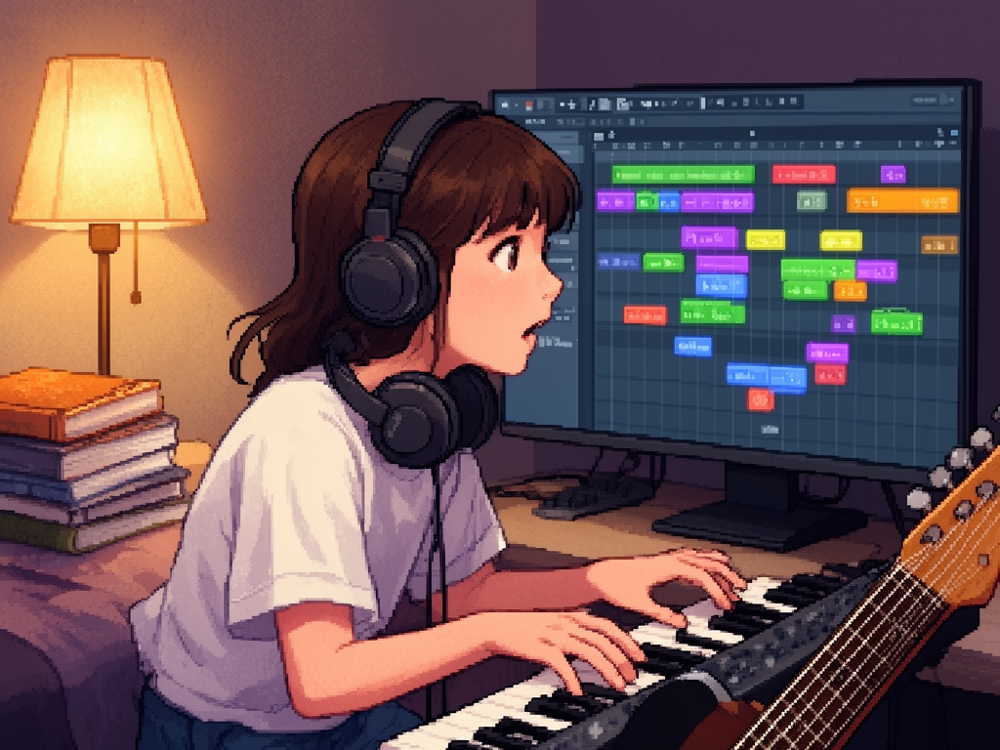
pixel_artDetailed pixel art, 16-bit palette, dithering, teenage girl in small bedroom studio, headphones around neck, leaning toward monitor showing AI chord suggestions as colored blocks in a DAW timeline, guitar neck visible at edge, notebooks stacked, warm lamp dither, moment of recognition as she reaches for keys, discovery not instruction NO TEXT NO LABELS
Photorealistic, cinematic lighting, dim rural clinic, midnight blue from a single window, young pregnant woman alone in a chair, hand on her belly, on the wall behind her a small vital-signs monitor glows steady green — baby's heartbeat, her pressure, both fine. No doctor. No alarm. Just a woman and a good number in the dark. NO TEXT NO LABELS
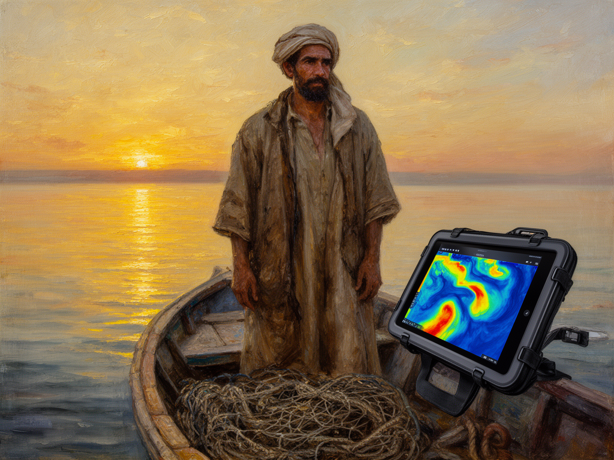
oil_paintingOil painting, visible brushstrokes, classical lighting, dawn gold on still water, weathered Moroccan fisherman standing in a small boat, a waterproof tablet strapped to the gunwale showing thermal ocean currents — just another tool like the net coiled at his feet. His eyes read horizon and screen with equal ease. NO TEXT NO LABELS
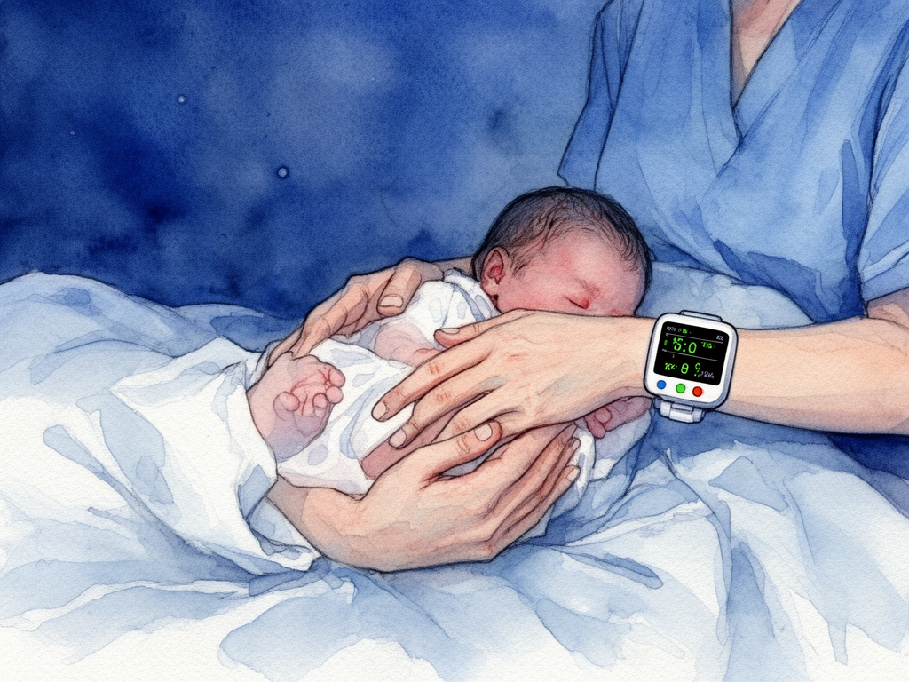
watercolorWatercolor wash, loose flowing strokes, paper texture visible, blue predawn, a midwife's hands cradling a newborn, on her wrist a small biosensor — mother stable, baby stable. The nearest hospital is four hours away. She already knew. The number confirmed it. The room holds only quiet and new breath. NO TEXT NO LABELS
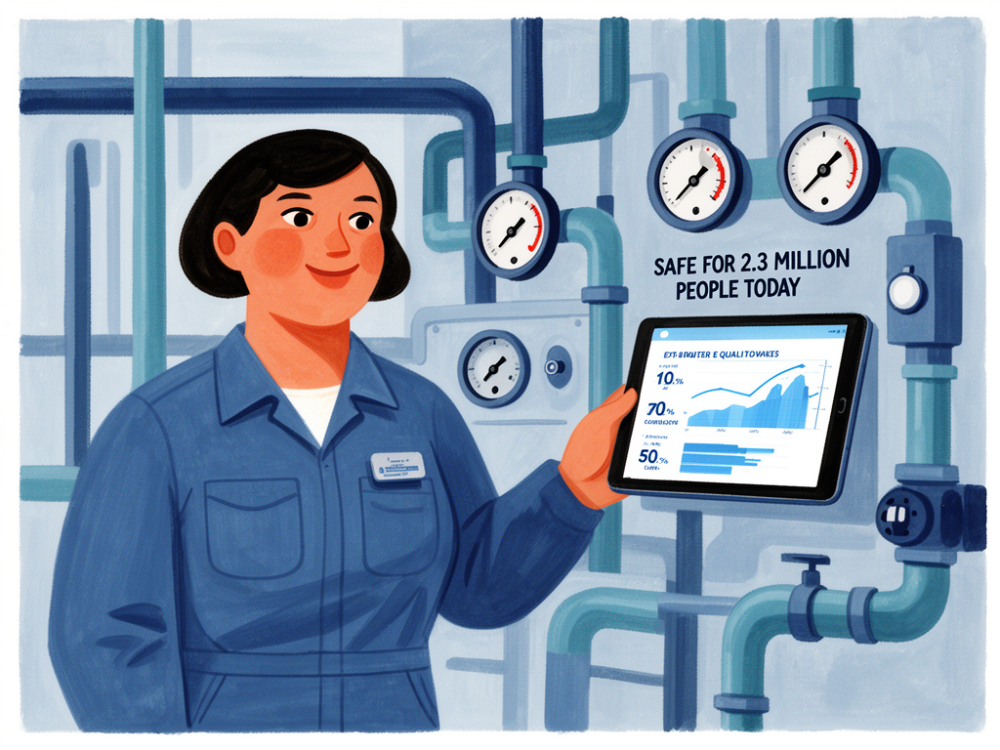
gouacheGouache illustration, flat bold colors, mid-century modern, a municipal water treatment operator, broad-shouldered woman in coveralls, before a wall of gauges and pipes rendered as flat geometric shapes. Her tablet shows water quality data — safe for 2.3 million people today. The pipes ARE the poster. She is the unseen guardian. NO TEXT NO LABELS
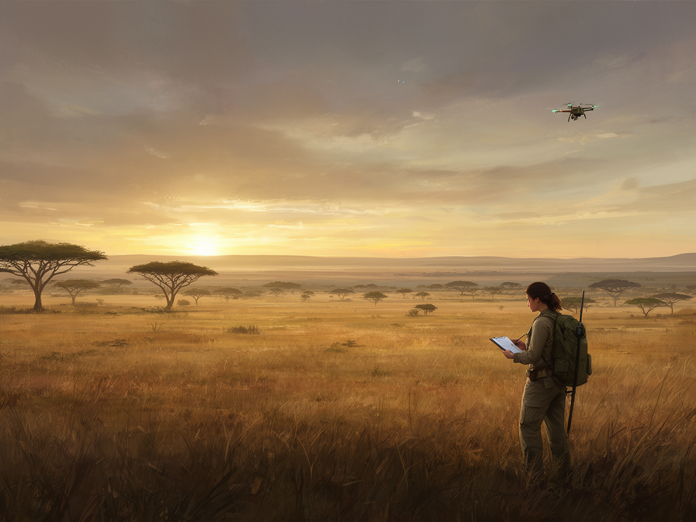
concept_artDigital concept art, painterly, matte painting style, vast rewilded African savanna at golden hour stretching to horizon, lone conservation biologist — small figure at the edge of recovered grassland, clipboard in hand, a single survey drone a barely-visible speck in the enormous sky. AI predicted this migration return 18 months ago. She came to confirm it. The land did the rest. NO TEXT NO LABELS
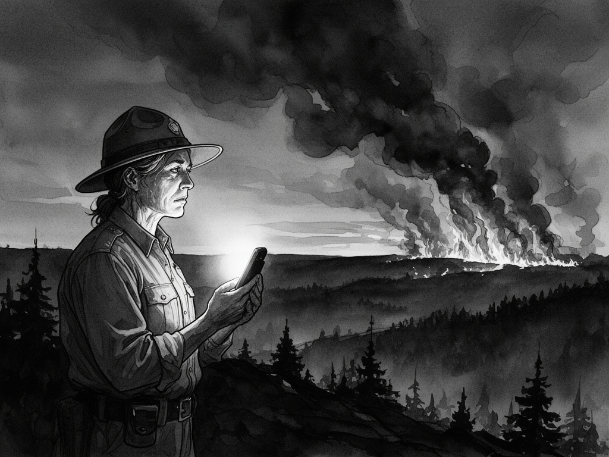
ink_washBlack and white ink wash, sumi-e inspired, dramatic contrast, a lone forest ranger stands at a ridgeline at dusk, smoke blooming on the distant horizon, a phone's pale glow the only light on her weathered face, her eyes already fixed on the smoke — not the screen. A lifetime of fire behind her. A decision ahead. Ink bleeds into the sky like the smoke itself. NO TEXT NO LABELS
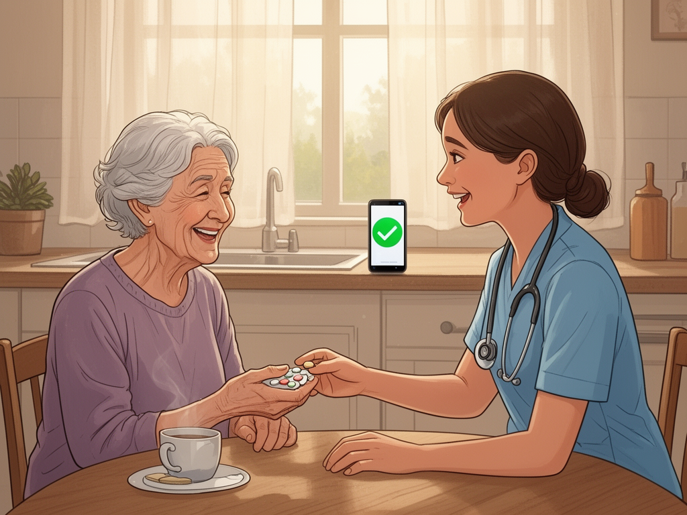
editorialEditorial illustration, clean lines, warm palette, magazine quality, a young home health aide hands morning medication to an elderly woman at her kitchen table, both sharing a private laugh. On the counter behind them, a phone shows a quiet green checkmark — the AI dosage verification already done, already forgotten. Morning light through gauze curtains. NO TEXT NO LABELS
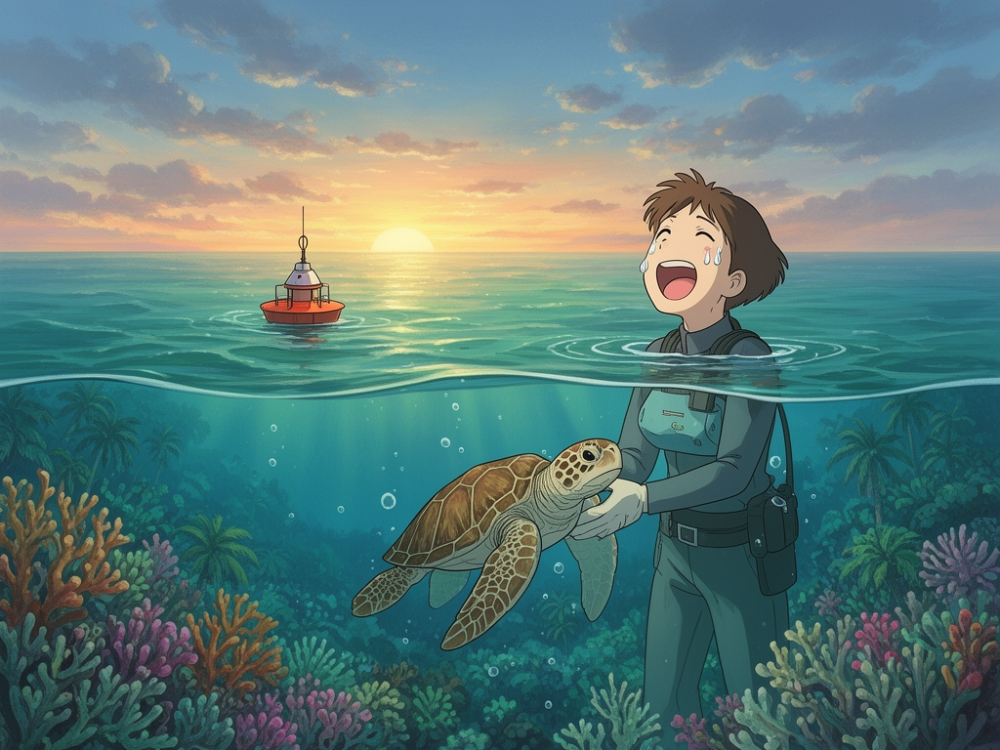
ghibliStudio Ghibli inspired, lush detail, simple figures, nature harmony, a marine biologist waist-deep in dawn-lit tropical shallows releases a sea turtle from her hands, face upturned laughing through tears. A small tracking buoy bobs in the middle distance — it found him, she freed him. The turtle descends into lush coral below an open sky. NO TEXT NO LABELS
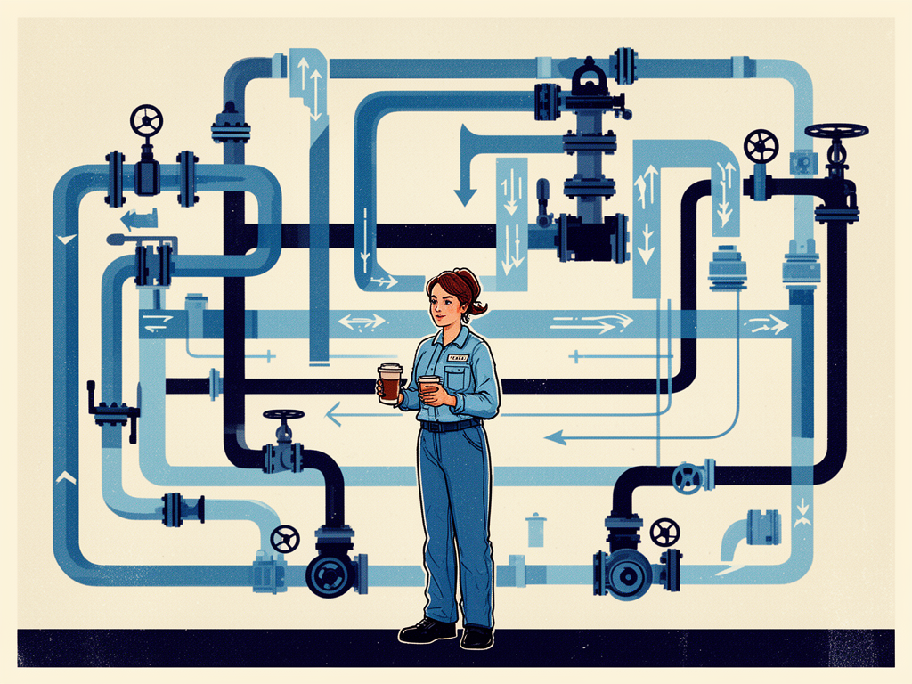
retro_posterRetro-future poster, bold geometric shapes, limited palette, a water treatment operator stands before a vast diagram of pipes, valves, and flow networks — the invisible infrastructure of a city. Her figure is small but confident, coffee in hand. The geometric shapes ARE the AI overnight optimization: pressure routing, contamination detection, flow balance. She arrives each morning to review. NO TEXT NO LABELS
Architectural rendering, precise lines, ambient occlusion, a structural engineer presses both palms flat against a cracked concrete wall in a partially collapsed building, eyes closed — listening. Behind her, a tablet shows stress analysis in precise architectural lines. Twenty years of earthquakes in her hands. The data confirmed what she felt first. Dust motes in the only shaft of light. NO TEXT NO LABELS
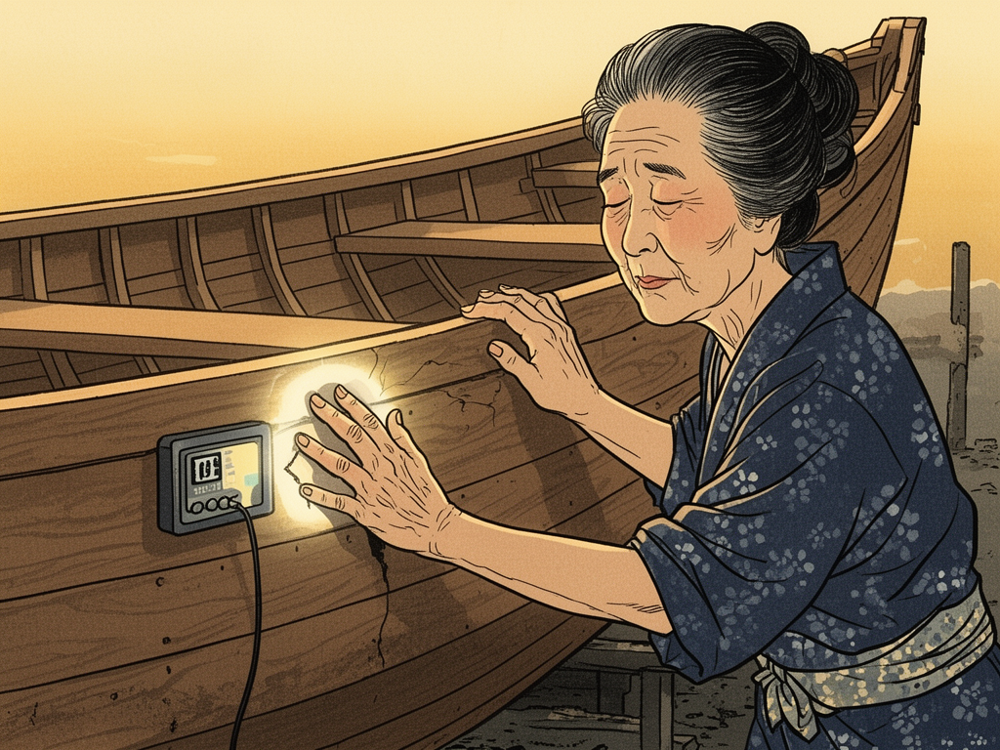
woodblockJapanese woodblock print, flat planes, bold outlines, elderly Japanese-American woman runs both palms along the curved hull of a wooden boat in dry dock, eyes closed, detecting a hidden flaw by touch. A small sensor pad on the wood glows faintly, its readout matching what her hands already found. Late afternoon gold. Reverence for material knowledge. NO TEXT NO LABELS
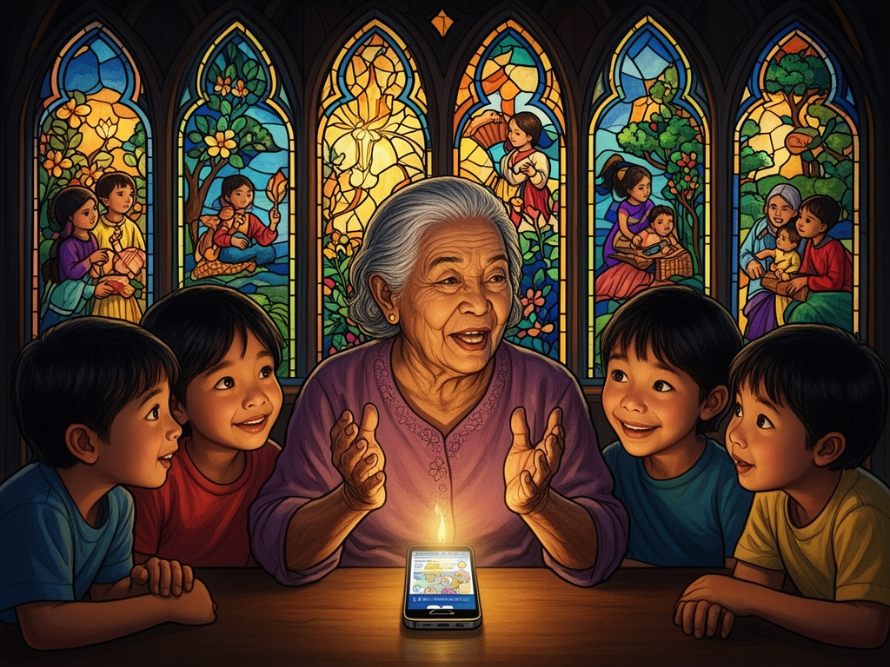
stained_glassStained glass style, luminous colors, lead lines, Gothic frame, elderly Filipina grandmother mid-storytelling gesture, grandchildren leaning in rapt. Between them a small phone rests face-up on the table, quietly translating. Each stained glass panel shows a scene from her story in vivid color. The phone is barely there — a candle-sized light. Evening warmth. Heritage flowing unbroken across the language gap. NO TEXT NO LABELS
Isometric view, detailed miniature, tilt-shift depth of field, disaster relief distribution center viewed from above, tiny human figures organizing supplies with quiet efficiency. Colored supply lines radiate outward like circuit traces, AI-optimized but invisible in mechanism — just order emerging from chaos. A single coordinator at the hub, hand raised mid-instruction. Warm late light. The miniature scale makes the human effort feel like a gift. NO TEXT NO LABELS
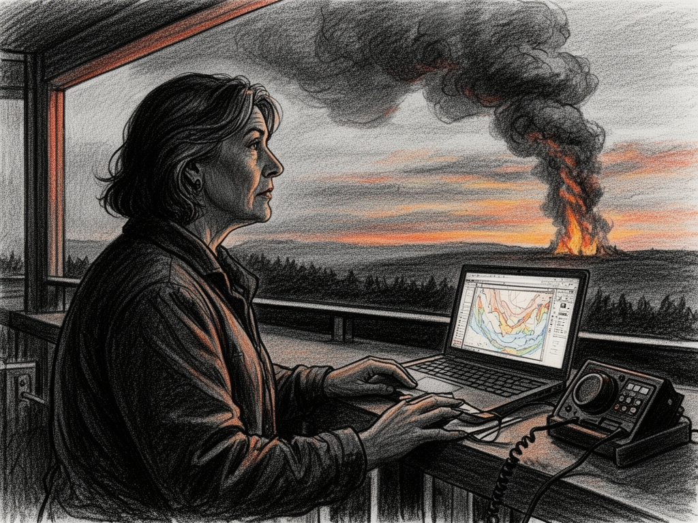
charcoalCharcoal drawing, dramatic shadows, textured paper, solitary woman in her 50s at a fire lookout tower, one hand gripping the railing, other reaching for the radio mic. On the desk behind her a small laptop shows fire behavior modeling — but her eyes are already on the distant smoke column, already certain. Paper grain becomes heat shimmer and char. Dusk. The decision was made before the machine finished. NO TEXT NO LABELS
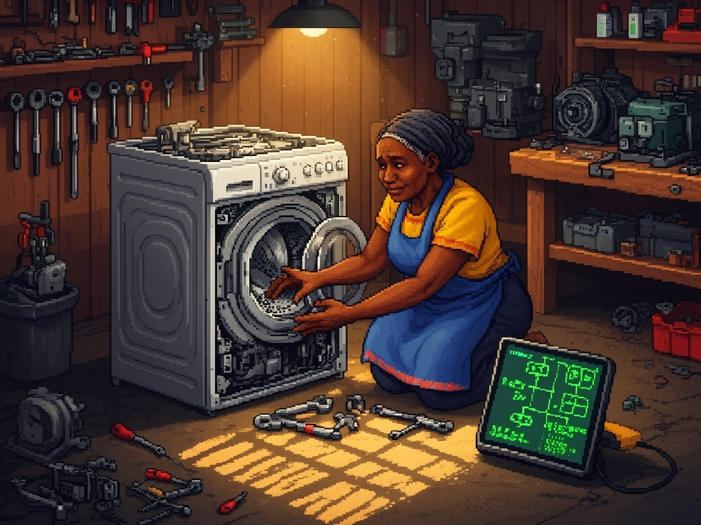
pixel_artDetailed pixel art, 16-bit palette, dithering, middle-aged Kenyan woman in a community repair shop, hands deep inside a disassembled washing machine, methodical and sure. A small diagnostic tablet nearby shows the fault tree in green pixels — but her hands are already at the right part. Warm shop light, tool shadows dithered across the floor. Repair as dignity, machine as puzzle solved. NO TEXT NO LABELS
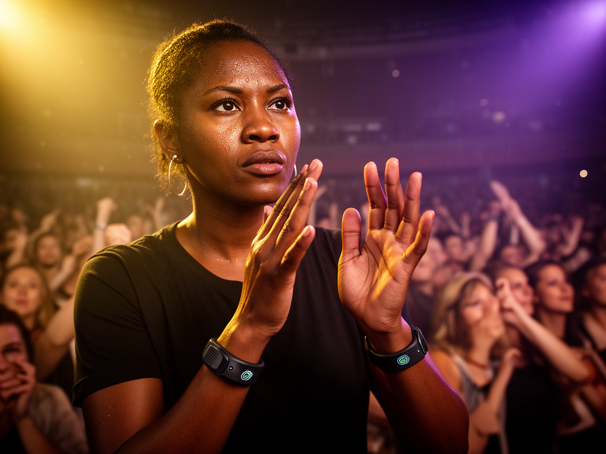
photorealisticPhotorealistic, cinematic lighting, close-up portrait of a Black deaf woman, sign language interpreter at a concert, hands held mid-gesture above the roar of the crowd, small vibration wristbands barely visible on both wrists, sweat and stage light on her face, full concentration, shot from below, warm gold and purple light, the music visible only in her hands, NO TEXT NO LABELS
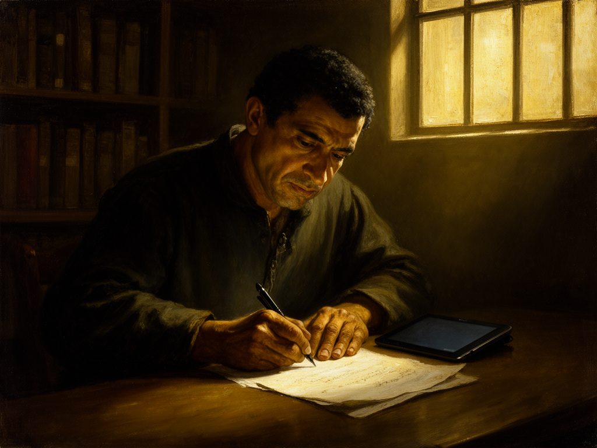
oil_paintingOil painting, visible brushstrokes, classical lighting, Rembrandt chiaroscuro, a middle-aged Latino man at a prison library table, writing by hand, small dim tablet beside him, his face lit from a single high window, expression of concentrated determination, pen and paper dominate the composition, the tablet is secondary and barely visible, warm amber shadows, NO TEXT NO LABELS
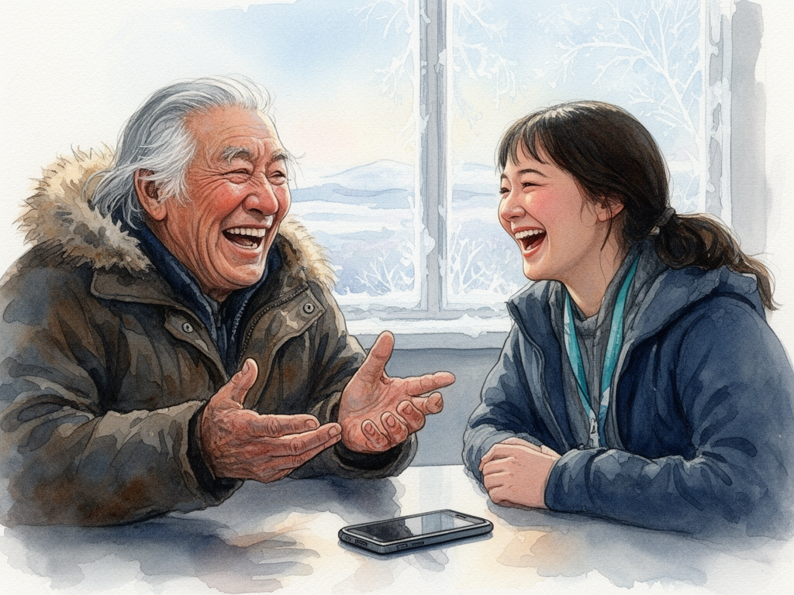
watercolorWatercolor wash, loose flowing strokes, paper texture visible, an Inuit elder and a young woman linguist sit very close, both laughing hard, the elder's weathered hands mid-gesture, soft diffused arctic light through a frosted window, a phone resting on the table between them barely noticed, warmth and trust between two generations, the laughter is the entire subject, intimate and fleeting, NO TEXT NO LABELS
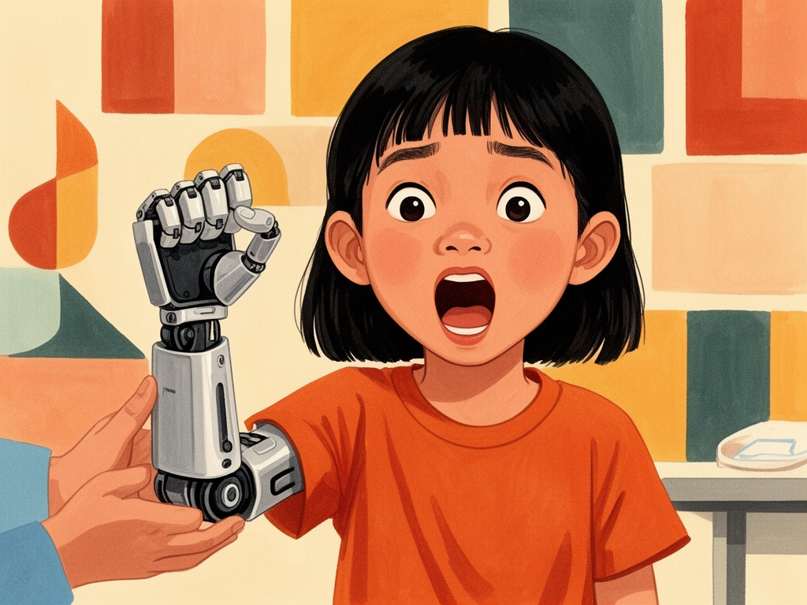
gouacheGouache illustration, flat bold colors, mid-century modern, a small Southeast Asian girl age seven making a triumphant fist with her new myoelectric prosthetic hand, face pure disbelief and joy, warm clinic setting with bold geometric shapes in background, a technician's hands visible at frame edge steadying the device, the child fills the frame entirely, bold warm palette, NO TEXT NO LABELS
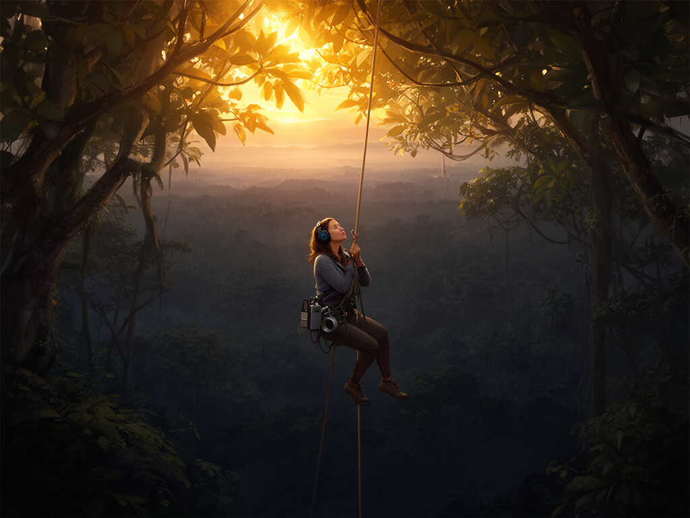
concept_artDigital concept art, painterly, matte painting style, a female researcher suspended on a rope at 60 meters at the top of a rainforest canopy at dawn, headphones on, eyes closed, listening, golden light breaking through leaves above her, the vast dark forest floor impossibly far below, she is tiny against the ancient canopy, peaceful and intensely concentrated, acoustic sensor equipment barely visible clipped to her harness, NO TEXT NO LABELS
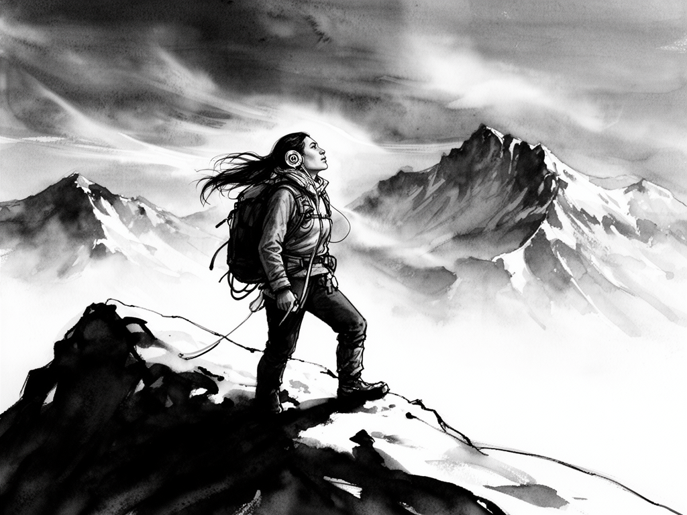
ink_washBlack and white ink wash, sumi-e inspired, dramatic contrast, a lone Indigenous woman mountain guide pauses on a snow ridge, head tilted, listening. A small earpiece relays AI avalanche risk data. She is already turning, already certain, before the alert sounds. Wind-blurred peaks above, hard shadow below. Solitude and competence as the same thing. NO TEXT NO LABELS
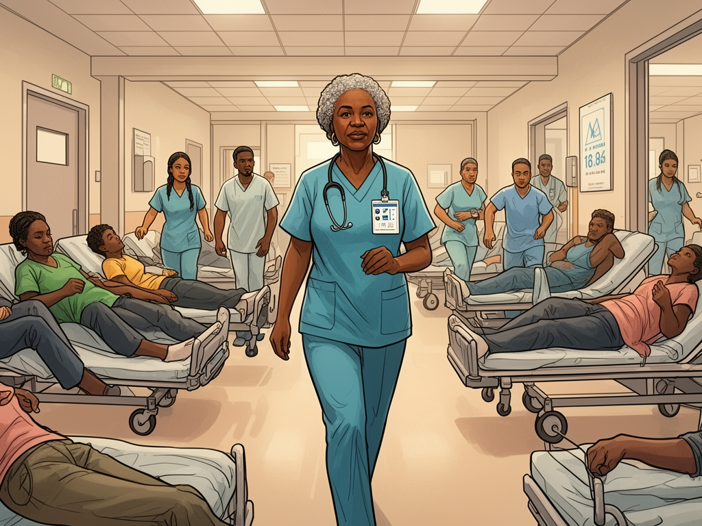
editorialEditorial illustration, clean lines, warm palette, magazine quality, a 60-year-old Ghanaian ER nurse moves through a triage bay, decisive, unhurried. A small badge displays AI risk scores. She has already acted on every patient before her eyes find the numbers. Bodies in motion, urgency without panic. The algorithm follows. NO TEXT NO LABELS
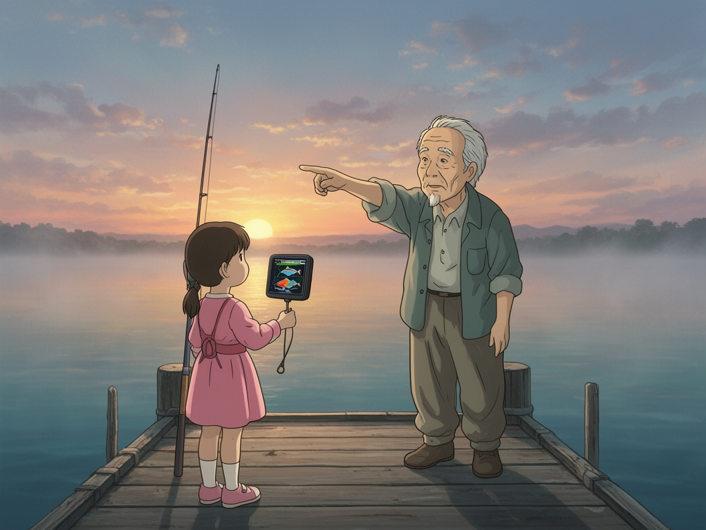
ghibliStudio Ghibli inspired, lush detail, simple figures, nature harmony, an elderly Korean grandfather and his young granddaughter stand at the end of a fishing pier at dawn. She holds a small device showing fish migration data, but he is already pointing at the horizon. Dawn mist, still water, certainty passing between generations. The data confirms what he already sees. NO TEXT NO LABELS
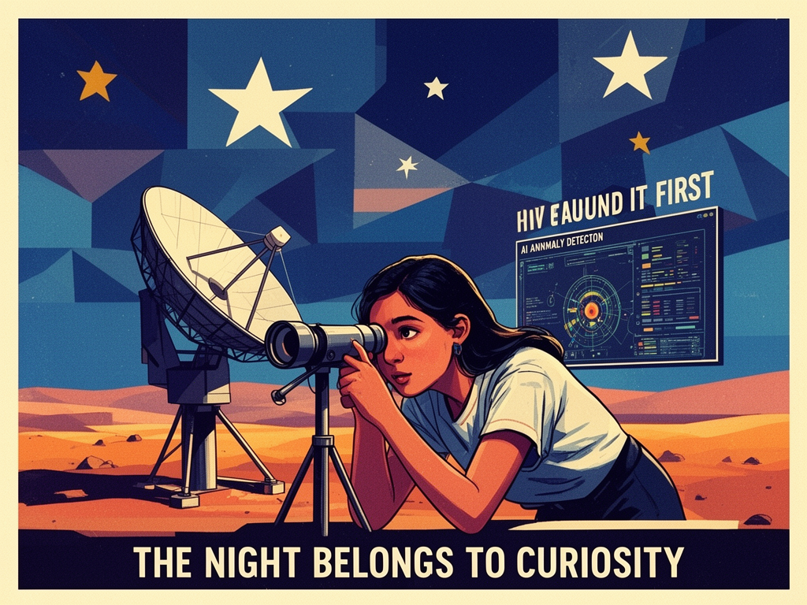
retro_posterRetro-future poster, bold geometric shapes, limited palette, a young Peruvian woman leans into a radio telescope eyepiece under a geometric desert sky. Stars as flat bold shapes. An AI anomaly detector runs behind her on a screen. She is looking with her own eyes. She found it first. The night belongs to curiosity. NO TEXT NO LABELS
Architectural rendering, precise lines, ambient occlusion, a structural engineer presses one palm flat against a century-old stone bridge arch, eyes closed. Acoustic AI sensors trace the surface nearby. She is listening with her body in a way no sensor captures. Cross-section of stone, data, and flesh — three kinds of knowing at the same surface. NO TEXT NO LABELS
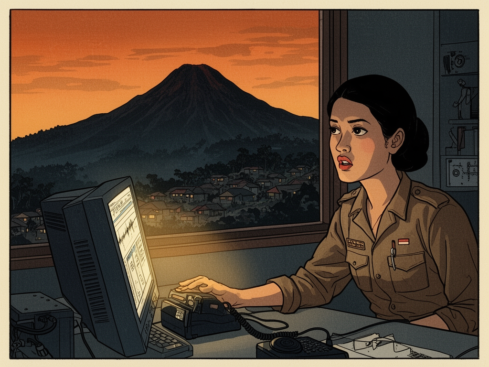
woodblockJapanese woodblock print, flat planes, bold outlines, A Javanese volcanologist in her field station at dusk, alert face lit by a single monitor, AI flagged a seismic precursor no human had catalogued, outside the window a village still asleep on the mountain slope, flat planes of orange sky against volcanic silhouette, she reaches for the radio, everything about to change, NO TEXT NO LABELS
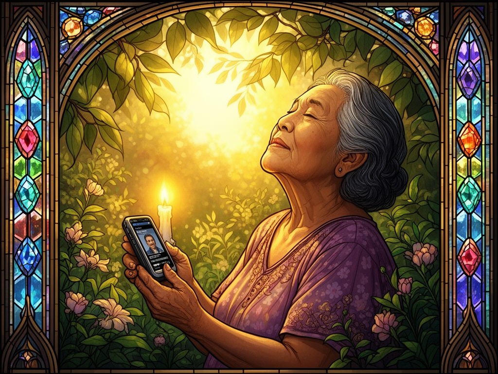
stained_glassStained glass style, luminous colors, lead lines, Gothic frame, An elderly Filipino woman in a garden at golden hour, holding a small device playing her late husband's voice reconstructed from fifty years of recordings, eyes closed face lifted toward the sun, light through leaves rendered as jeweled panes, the device glowing like a votive candle, grief and presence intertwined, NO TEXT NO LABELS
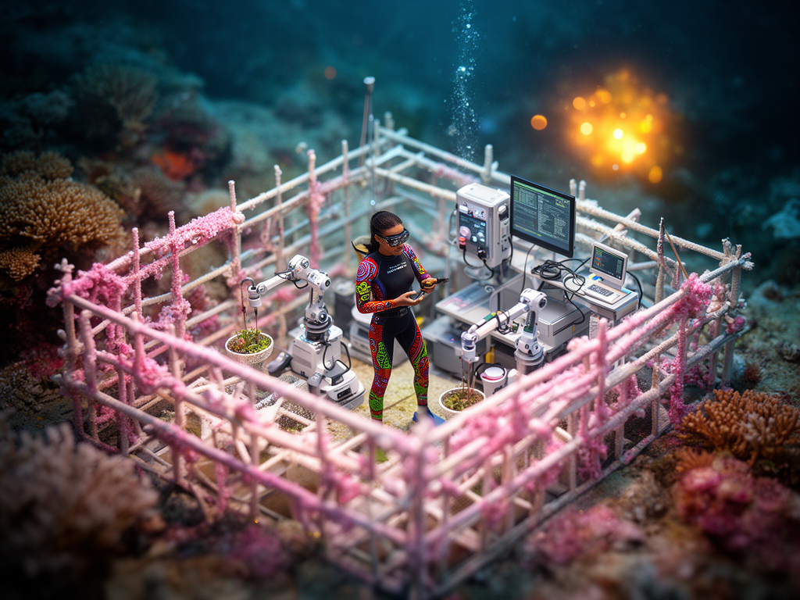
isometricIsometric view, detailed miniature, tilt-shift depth of field, Underwater coral reef restoration station off Queensland, Aboriginal marine biologist at center orchestrating AI-monitored growth sensors and micro-planting robots she designed, tilt-shift makes the reef a jeweled terrarium, warm bioluminescence in the distance, her wetsuit vivid against bleached scaffolding turning pink with new coral growth, NO TEXT NO LABELS
Charcoal drawing, dramatic shadows, textured paper, A nine-year-old boy with dyslexia in the precise moment of reading aloud for the first time, AI adaptive software reshaped the text into symbols his brain unlocks, face tilted up from the page: surprise becoming wonder becoming understanding, his mother behind him hand over her mouth, charcoal shadows carry the weight of years trying and now this moment, NO TEXT NO LABELS
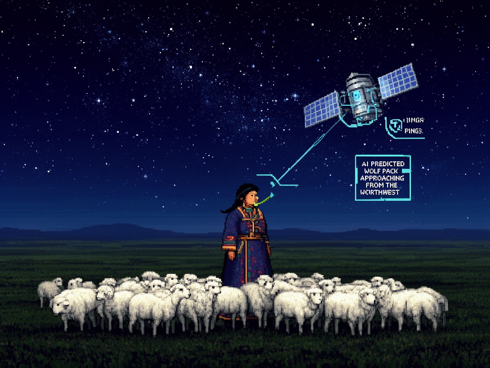
pixel_artDetailed pixel art, 16-bit palette, dithering, A Mongolian herdswoman on the open steppe at midnight, her flock a white cluster in darkness, satellite earpiece pings: AI predicted wolf pack approaching from the northwest, she turns unhurried and certain, the vast 16-bit sky packed with stars, the ancient and the algorithmic in perfect equilibrium, her silhouette against the pixelated horizon, NO TEXT NO LABELS
Photorealistic, cinematic lighting, elderly Japanese craftsman, 78, cutting a curved dovetail joint with trembling hands; his face locked in fierce concentration; the chisel follows his intent precisely — Parkinson's invisible in the finished cut; warm workshop, single overhead lamp, cherry shavings on the floor, a cradle-rail emerging from the wood. NO TEXT NO LABELS
Oil painting, visible brushstrokes, classical lighting, Sudanese surgeon, 50s, steady hands holding a microsurgical tool, single shaft of operating light from above; her expression absolute presence; deep shadow frames the scene like a Rembrandt portrait; no screen visible, the AI lives in the haptic resistance of the instrument against her fingertips. NO TEXT NO LABELS
Watercolor wash, loose flowing strokes, paper texture visible, elderly Latino grandfather, 70s, seated by a window, eyes closed; a small speaker on the table; his late wife's voice reaches him from old recordings rebuilt by AI; afternoon light warms his face; the lines of his grief slowly releasing; the room holds the sound like breath. NO TEXT NO LABELS
Gouache illustration, flat bold colors, mid-century modern, Tamil Nadu farmer woman, 40s, ankle-deep in newly-flowing irrigation channels through red clay fields at dawn; she stands in the center of what arrived overnight; her face — not surprise but recognition; the water speaks first; flat terracotta sky, bold geometry of channels receding. NO TEXT NO LABELS
Digital concept art, painterly, matte painting style, female mining geologist, 40s, alone in a narrow shaft; she presses her bare palm against the rock face, eyes closed; a distant seismic sensor blinks green overhead; both her hands and the machine have read the same answer; amber headlamp light, ancient stone walls, dust settling. NO TEXT NO LABELS
Black and white ink wash, sumi-e inspired, dramatic contrast, close on a midwife's weathered hands guiding a newborn into lamplight, a small AI sensor bracelet on her wrist shifts from amber to green — risk resolved in the body before it became crisis, sparse room, damp walls, firelight catching the relief crossing her face, life held and delivered, NO TEXT NO LABELS
Editorial illustration, clean lines, warm palette, magazine quality, a hospital pharmacist mid-reach — her hand suspended in air above an open drawer, eyes locked on a single amber warning on the dispensing screen, AI has flagged a near-fatal drug interaction she nearly missed, the pill still untouched, golden afternoon light through the pharmacy window, the correction that never had to happen, NO TEXT NO LABELS
Studio Ghibli inspired, lush detail, simple figures, nature harmony, an elderly beekeeper stands perfectly still in a summer meadow as ten thousand bees spiral in living patterns around her, a small wrist display maps colony health in color — she reads the swarm without ever opening a box, afternoon gold, wildflowers at her knees, belonging without intrusion, unhurried and certain, NO TEXT NO LABELS
Retro-future poster, bold geometric shapes, limited palette, a deaf percussionist mid-performance eyes closed, whole body alive — vibration-sensing suit renders AI-translated frequencies as waves of haptic light across her skin, she doesn't hear the bass drum, she IS the bass drum, bold coral and deep teal, the instrument and the player indistinguishable, NO TEXT NO LABELS
Architectural rendering, precise lines, ambient occlusion, a wildfire prevention specialist at blue hour in dense chaparral ties orange ribbon around a marked tree while AI thermal imaging overlays ghostly heat signatures through the smoke ahead — risk made visible before any spark exists, she moves with quiet purpose through amber haze, vast sky behind her, the landscape and its hidden danger both legible at once, NO TEXT NO LABELS